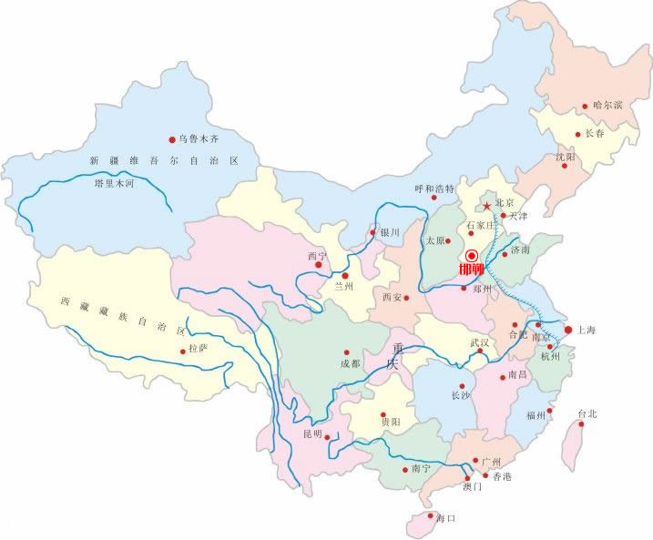
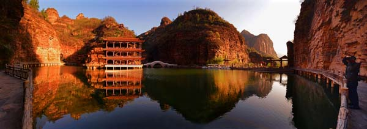
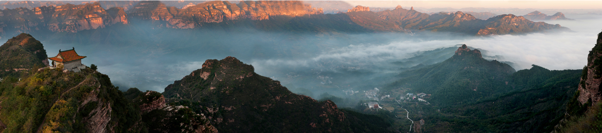
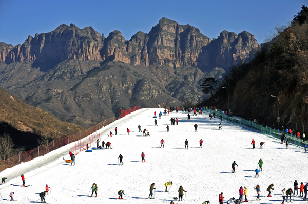
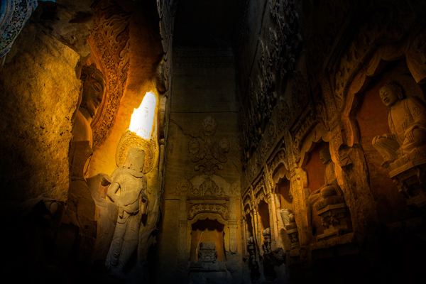

邯郸的旅游资源可概括为：文物古迹荟萃，太行风光秀美，红色资源独特。说它文物古迹荟萃，这里是中国文物大市之一，全市拥有18处国家级文物保护单位，97处省级文物保护单位，7项国家级非物质文化遗产，从上古神话到现代文明，在漫长的历史长河中，历朝历代都在邯郸这块古老的土地上留下了历史印迹与瑰丽华章，使它成为中国历史文化的大观园。

武灵丛台－－黄梁梦吕仙祠－－赵苑公园－－市博物馆
这是一条集赵文化、梦文化、成语典故文化与一体的古文化之旅，除感受历史文化的魅力之外，还可以游览市容，新世纪、滏春超市等各大商场都设有邯郸特产专柜，以供游客选择各种土特产品、风味小食品。

磁州窑盐店遗址－－富田遗址－－南北响堂山石窟－－元宝山
这是一条充满艺术气息的旅游线路。在磁州窑遗址不仅可以一览古代瓷窑作坊的全貌，还可以动手参与制作陶器坯胚，或到彭城古镇陶瓷一条街，购买心仪的陶瓷工艺品。

京娘湖－－长寿村－－朝阳沟－－古武当山
这条线路以武安市四大山水风光景点为主，是一条“乐山乐水”的生态休闲之旅。鉴于京娘湖景区具备相应的住宿条件，时间充裕的游客不妨徒步山水，两日游或三日游，以获得最大程度的休闲娱乐。

红色太行、娲皇故里之旅
129师司令部旧址（小院－将军岭－陈列馆）－－娲皇宫 这条线路融合了邯郸的边区革命文化，同时还可以探寻沿线的绿色之旅景点，最佳旅游时间为春、夏、秋季节。不过，每年农历三月和九月，娲皇宫举办庙会，是活动最为丰富的时节。